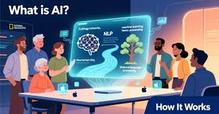

.jpeg)

The latest wave of AI tech news highlights unprecedented corporate investments in AI infrastructure the rapid rise of Agentic AI, and major research breakthroughs. Tech giants and startups alike are racing to build autonomous systems that can execute complex, multi-step tasks. The industry focus has shifted from simple text generation to "Agentic AI"—systems capable of crawling through tasks, calendars, and inboxes independently to act on a user's behalf.Microsoft AI: Microsoft is actively pursuing "super intelligence" and AI self-sufficiency by heavily investing in foundation models and expanding its intellectual property partnerships. The "Agentic Era" Takeover: Google has officially moved beyond static tools with its Gemini 2.5 Omni & Flash architecture, converting its software stack into an active AI operating layer. Concurrently, Elon Musk's xAI rolled out Grok Build to enter the autonomous agent coding sector, while Grok’s new web skills now let users delegate office work across productivity apps natively.
